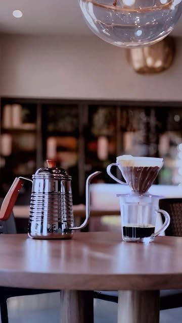
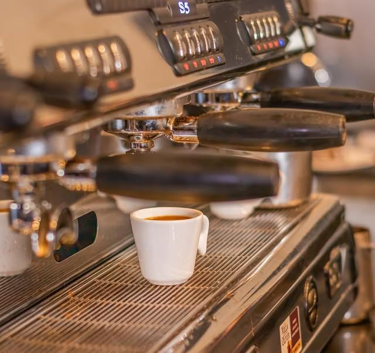
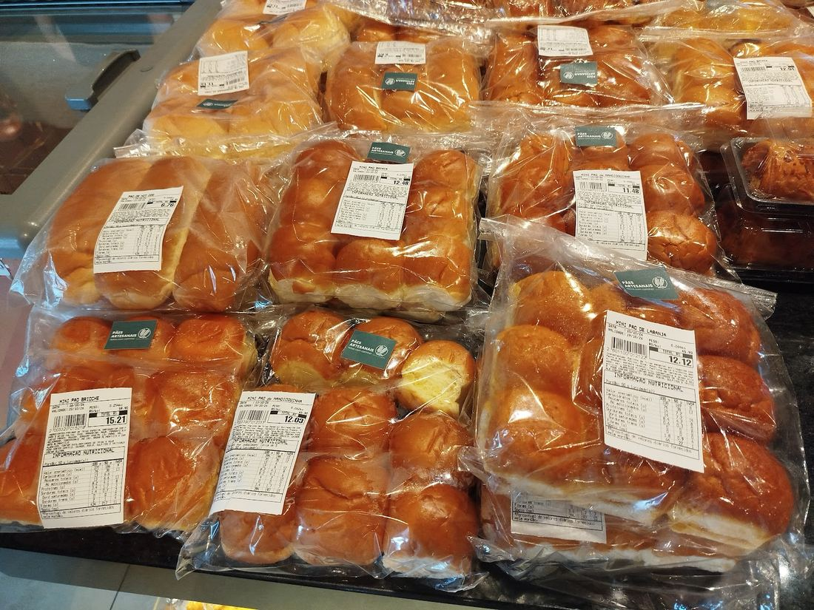
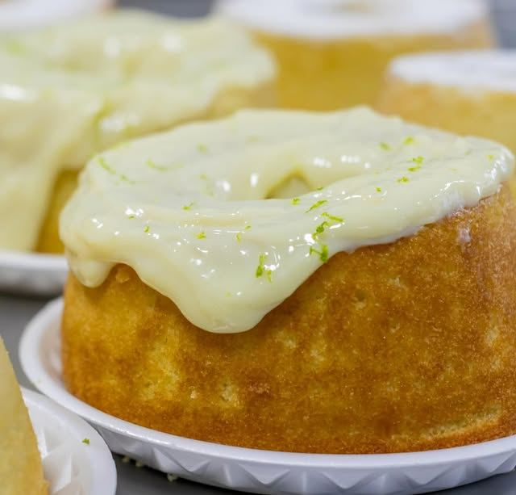
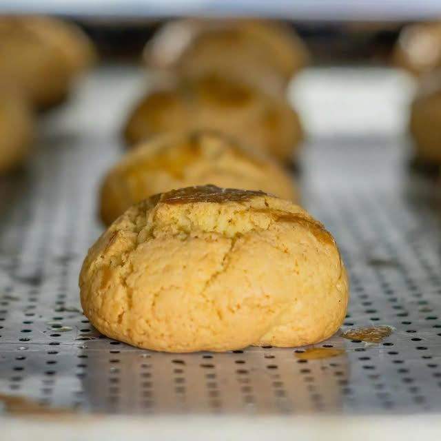
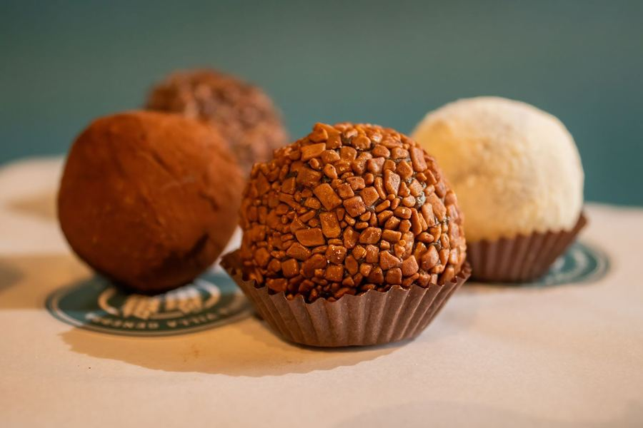
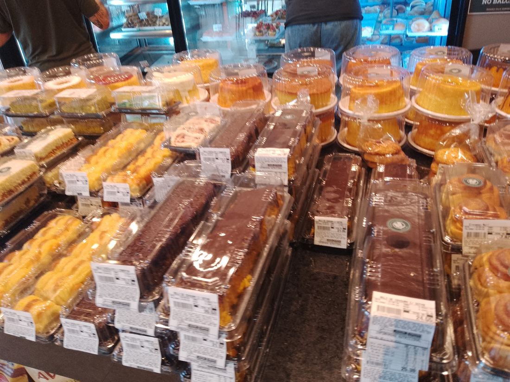

Cafés especiais
Do espresso ao coado na mesa
Café especial moído na hora, coado no método V60 na frente de quem pediu. O cappuccino da casa é suave e adocicado, do jeito que os clientes pedem de novo.


Preços do cardápio publicado pela padaria. Os pedidos são feitos no balcão.
Da padaria
Vitrine cheia do começo ao fim do dia
Pão francês que os clientes elogiam, brioche com parmesão, roscas, bolos e doces como bomba de creme e canoli de chocolate.





Todo diaInclusive domingo, a partir das 7h
EstacionamentoGratuito, com bastante vaga
Aceita valesSegundo quem já foi
EncomendasPelo WhatsApp da padaria
4,7 · 483 avaliações
O que dizem no Google
Padaria super bonitinha, ampla, com várias mesas. Preços justos, diferente do que vemos em muitas outras padarias.Giane · Google
Melhor pão com requeijão do mundo e melhor cappuccino também.Cliente · Google
Lugar aconchegante, produtos com qualidade e um ótimo café com leite.Resumo · Google
Visite
Aberta os sete dias
| Segunda | 6h às 21h |
| Terça | 6h às 21h |
| Quarta | 6h às 21h |
| Quinta | 6h às 21h |
| Sexta | 6h às 21h |
| Sábado | 6h às 21h |
| Domingo | 7h às 21h |
Rua Dr. João Valente do Couto, 43
Jardim Santa Genebra, Campinas (SP) · (19) 3208-3770